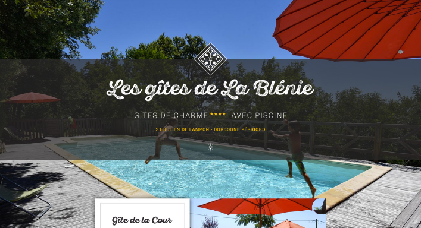
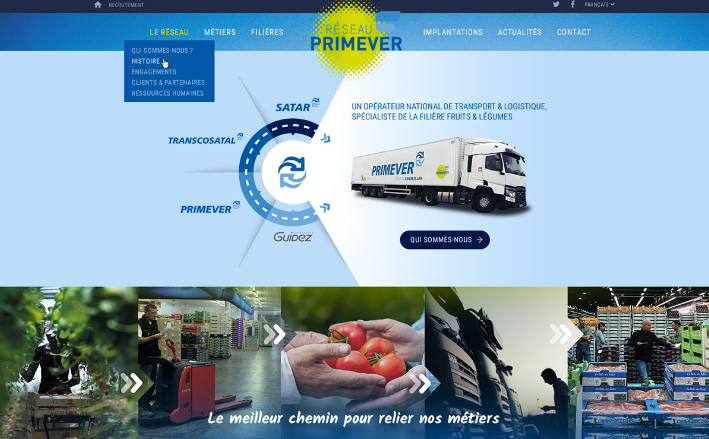
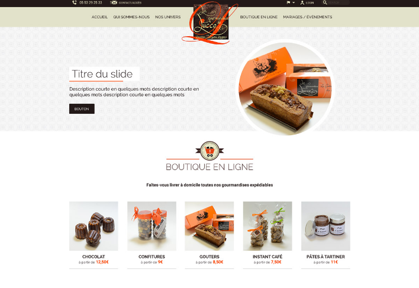
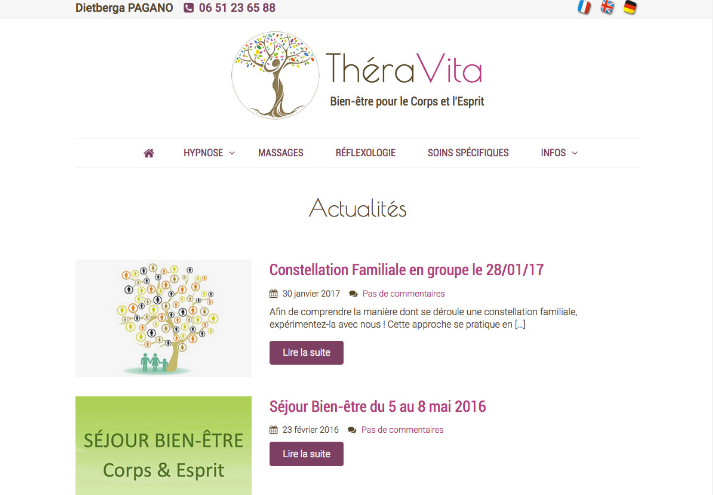
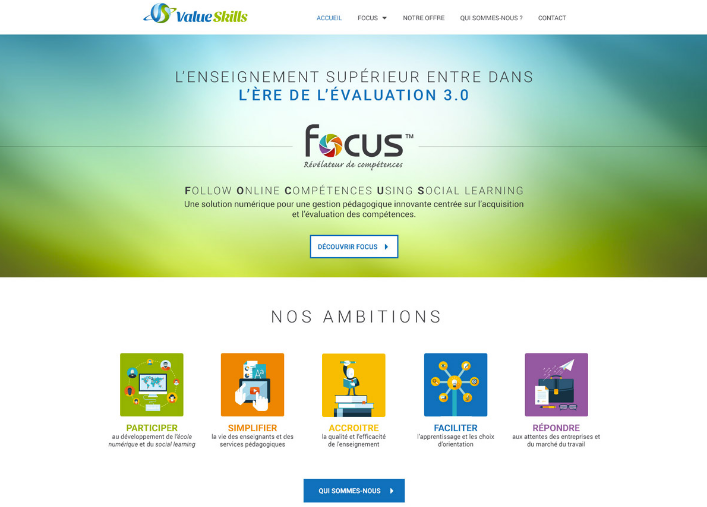
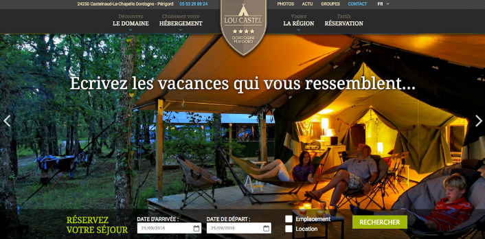
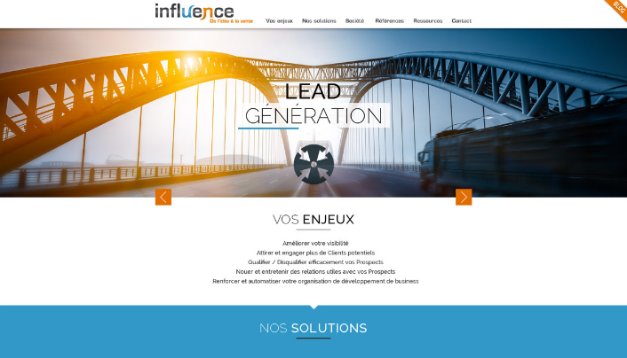

Aujourd'hui Elodie est freelance depuis 2010, elle partage son temps entre la Dordogne et la région parisienne. Auparavant webmaster de sites éditoriaux, elle à travaillé pour des titres de presse comme Historia, La Recherche, Le Magazine Littéraire ou encore 01 Informatique. Elle l'accompagne les PME (petites et moyennes entreprises) dans leur développement de site internet et effectue des missions d'intégration html/css sur différents projets.
PRÊT À PARTIR AUTOCARS
GÎTES DE LA BLÉNIE
GROUPE SARTAR
LES GOURMANDISES DE LUCCO
THÉRAVITA
FOCUS
CAMPING LOU CASTEL
INFLUENCE
Parler de votre prochain projet.